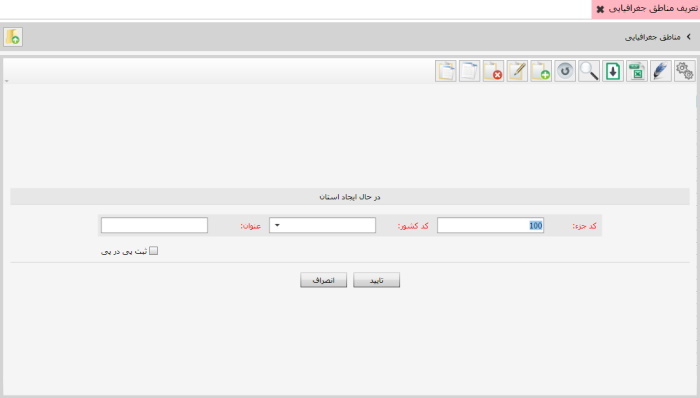

در این قسمت شما می توانید استان هایی که با آنها در ارتباط هستید را در سیستم تعریف کنید .
با کلیک روی گزینه ی تعریف مناطق جغرافیایی صفحه ی زیر باز خواهد شد.
برای تعریف استان جدید گزینه ی اضافه یا F8 را بزنید،تصویر زیر نمایان می شود:
پس از تکمیل فرم در تصویر بالا گزینه ی تایید را بزنید، استان جدید تعریف خواهد شد، همچنین با دوبار کلیک کردن روی نام استان ها می توانید مناطق استان ها را مشاهده کنید و با استفاده از گزینه ی اضافه یا F8 میتوانید مناطق جدید برای استان ها تعریف کنید.